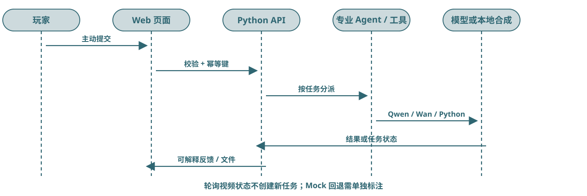

（五）结果解释与建议结果解读：一次 Agent 任务
一次主动提交先在后端校验并防重，再调用对应专业服务；文字返回结构反馈，音乐返回真实 MIDI/WAV，视频先返回任务状态、成功后才有 MP4。

证据与状态 Mock 回退需明确标注；轮询视频状态不再创建新任务。本图是代码路径，不代表三条真实 API 都已现场验收。
一次主动提交先在后端校验并防重，再调用对应专业服务；文字返回结构反馈，音乐返回真实 MIDI/WAV，视频先返回任务状态、成功后才有 MP4。

证据与状态 Mock 回退需明确标注；轮询视频状态不再创建新任务。本图是代码路径，不代表三条真实 API 都已现场验收。